Sequential prediction with flow models: adaptive renoising and world action models
Shitij GovilGeorgia TechPan Li lab meeting, 16 October 2026
Part 1
Seq-Flow and adaptive renoising
Start each forecast from the previous one. How much of it should we keep?
Streaming forecastingSeq-FlowAdaptive renoisingTraining
2
Part 1: Seq-Flow and adaptive renoising
What we forecast
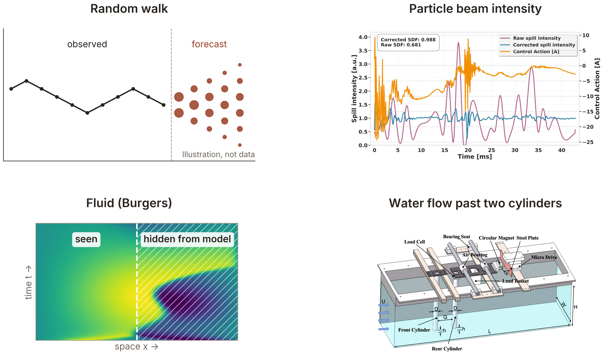
Seq-Flow, arXiv 2610.10440, App. A.1. Images: arXiv 2511.19099 Fig. 1; 2408.03124 Fig. 9; 2601.01829 Fig. 10a; random walk drawn
3
Part 1: Seq-Flow and adaptive renoising
Each new forecast overlaps the last one
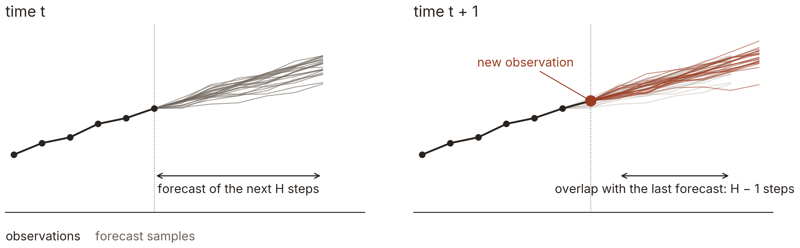
Illustration, not data
4
Part 1: Seq-Flow and adaptive renoising
Seq-Flow: start from the last forecast
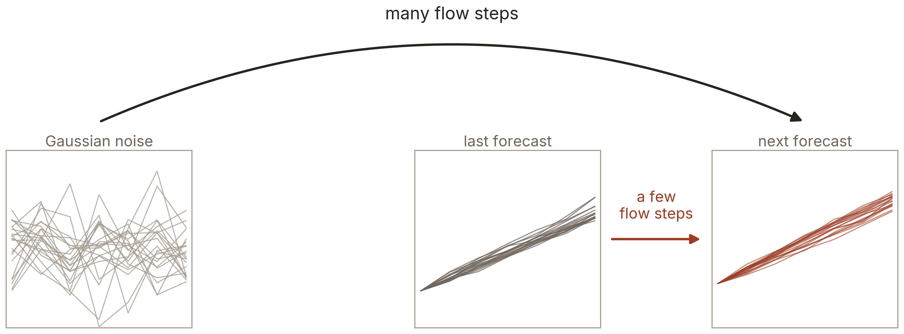
Illustration, not data
5
Part 1: Seq-Flow and adaptive renoising
Errors compound from update to update
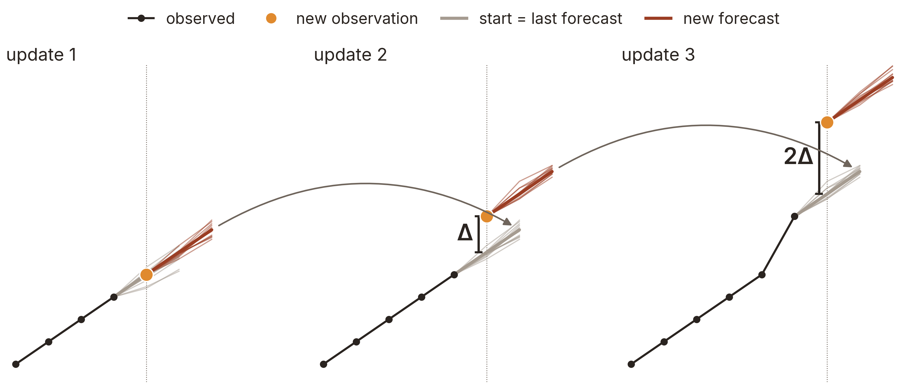
Illustration, not data
6
Part 1: Seq-Flow and adaptive renoising
Why: trained from the truth, tested from its own forecasts
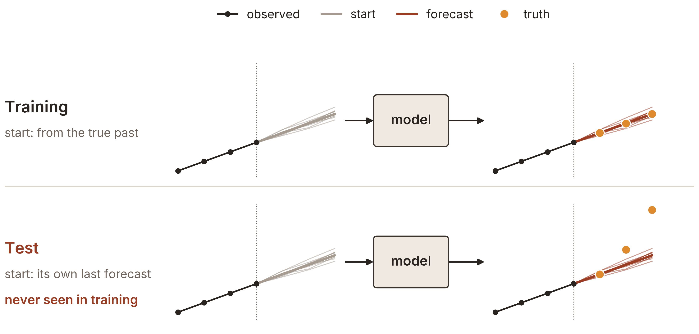
Illustration, not data
Seq-Flow, arXiv 2610.10440, Sec. 2.4
7
Part 1: Seq-Flow and adaptive renoising
Fix: train on its own forecasts
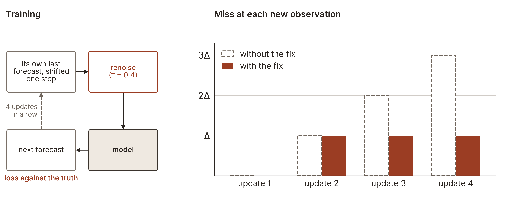
Illustration, not data
Seq-Flow, arXiv 2610.10440, Sec. 2.4, Alg. 1, App. A.2
8
Part 1: Seq-Flow and adaptive renoising
Seq-Flow in three steps
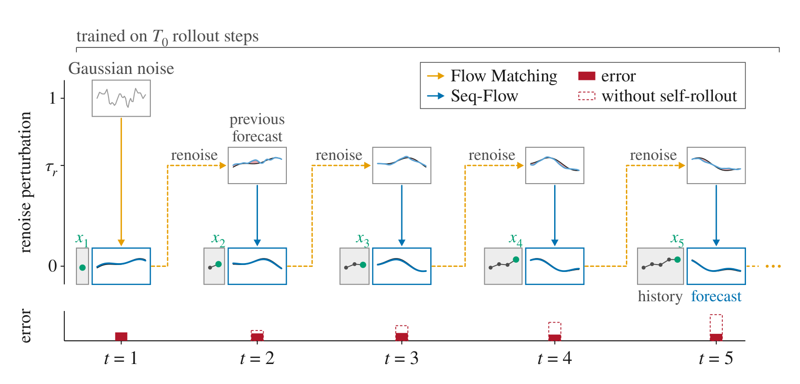
Huang, Govil, Dai, Li. Seq-Flow, arXiv 2610.10440, Fig. 1
9
Part 1: Seq-Flow and adaptive renoising
Seq-Flow results at 3 flow steps per update
| Method | Random walk (W1) | Beam | Burgers | Water flow |
|---|---|---|---|---|
| Flow from noise, 3 steps | 2.221 | 0.036 | 0.0068 | 0.0029 |
| Flow from noise, 10 steps | 0.905 | 0.035 | 0.0066 | 0.0028 |
| Flow Forcing | 1.526 | 0.040 | 0.0100 | 0.0030 |
| MeanFlowfew-step distillation | 50.081 | 0.103 | 0.7253 | 0.0028 |
| Warm-start Flowreuse without training for it | 304.403 | 1.349 | 0.0191 | 0.0027 |
| Seq-Flow | 1.069 | 0.015 | 0.0060 | 0.0026 |
arXiv 2610.10440, Table 1 (CRPS unless marked; lower is better)
10
Part 1: Seq-Flow and adaptive renoising
Error vs. number of flow steps
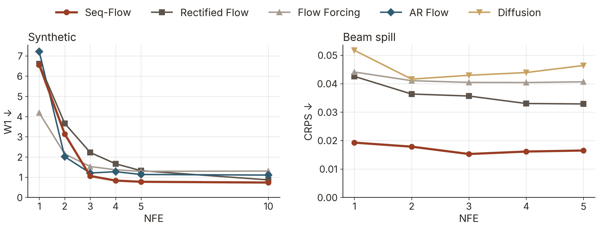
Huang, Govil, Dai, Li. Seq-Flow, arXiv 2610.10440, Fig. 2 (redrawn from the PDF's plotted values)
11
Part 1: Seq-Flow and adaptive renoising
But τ is one hand-tuned number
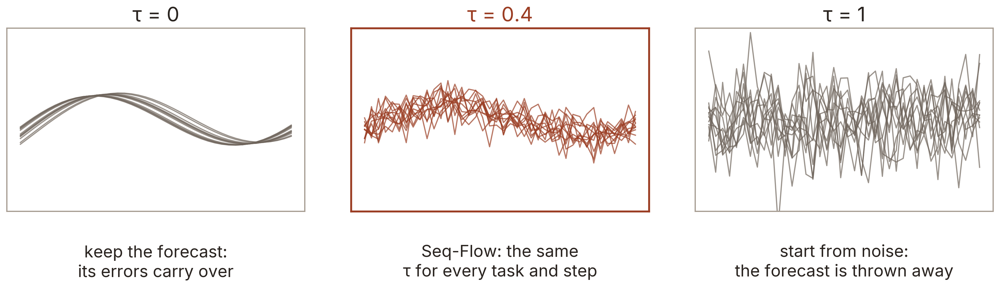
Illustration, not data
12
Part 1: Seq-Flow and adaptive renoising
Idea: let τ depend on the context
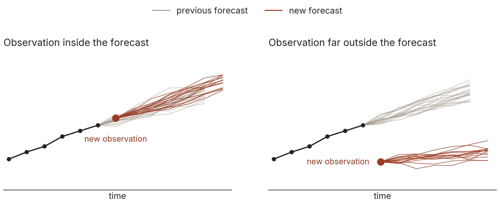
Illustration, not data
13
Part 1: Seq-Flow and adaptive renoising
Adaptive renoising: choose τ at every update
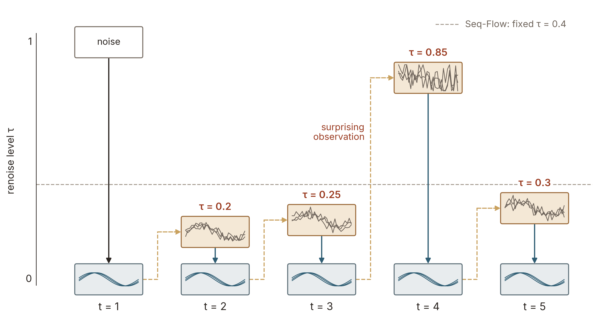
Illustration, not data
14
Part 1: Seq-Flow and adaptive renoising
Current design: two stages
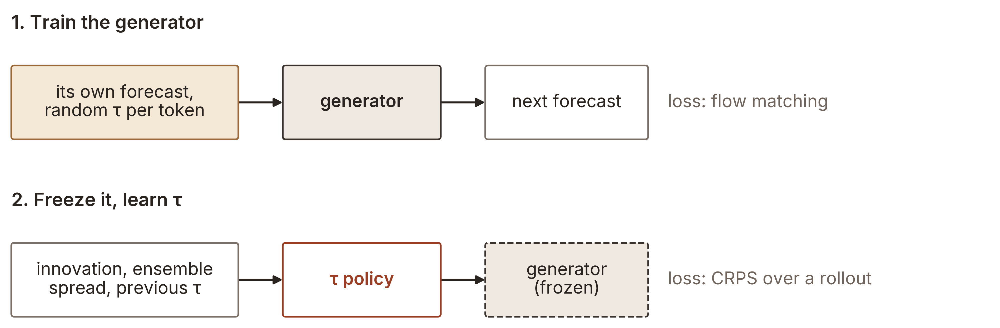
15
Part 1: Seq-Flow and adaptive renoising
Stage 1: one generator that works for any τ
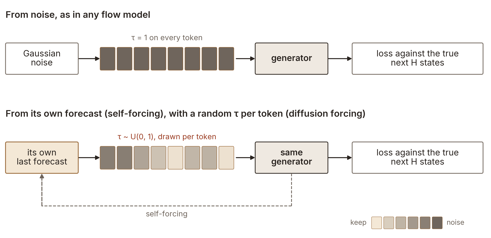
16
Part 1: Seq-Flow and adaptive renoising
Stage 2: learn the τ policy
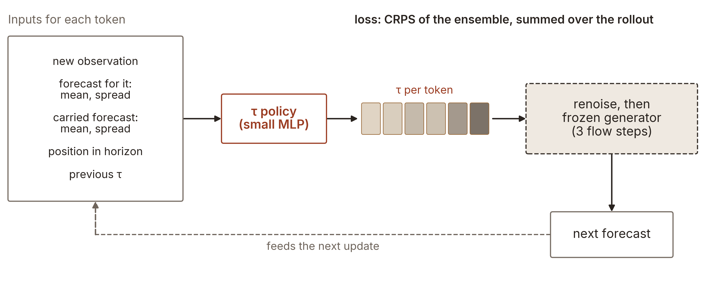
17
Part 2
What should a robot policy predict?
From imitation learning to world action models to FloMo
Robot dataWorld action modelsFloMoNext steps
18
Part 2: World action models
A robot policy
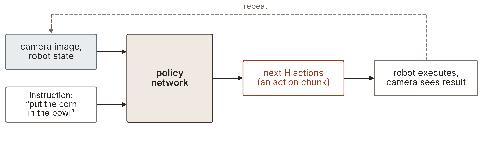
19
Part 2: World action models
Robot data is scarce
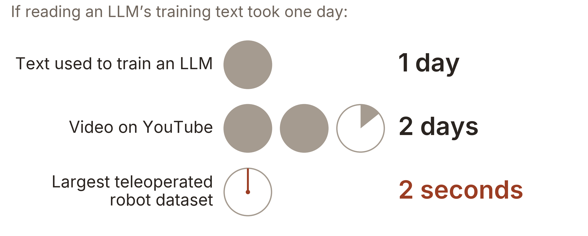
Llama 3 (arXiv 2407.21783); McGrady et al. 2023; LingBot-VLA (arXiv 2601.18692). Details in notes
20
Part 2: World action models
Human video is plentiful
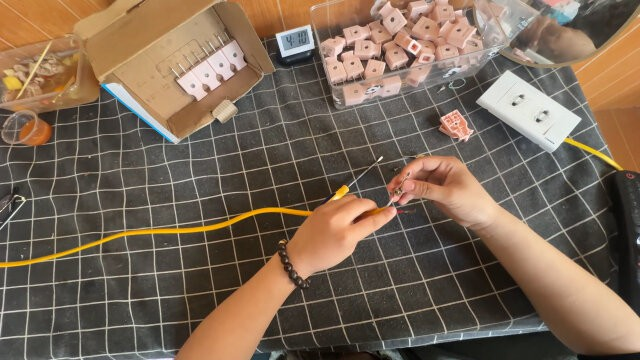
People doing everyday tasks with their hands: cheap to record, in any home or workplace.
- Shows the same tasks we want robots to do
- More human video gives predictably better policies
- But it has no robot actions
Image: EgoVerse, arXiv 2604.07607
21
Part 2: World action models
Learning from human video: hand poses as actions
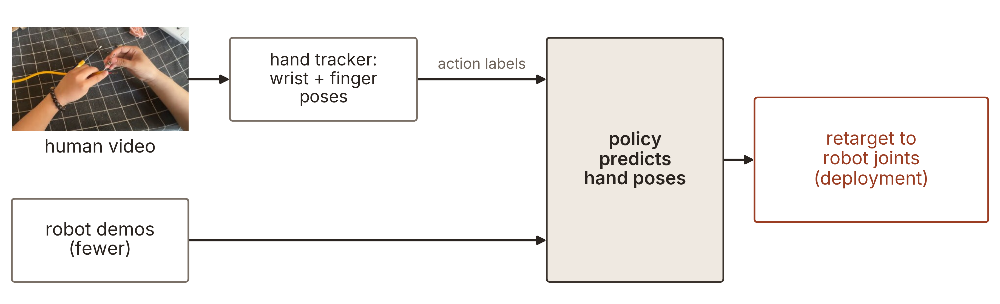
Illustration, not data
After HAT (arXiv 2503.13441), EgoMimic (arXiv 2410.24221); frame: EgoVerse (arXiv 2604.07607)
22
Part 2: World action models
Learning from human video: latent actions
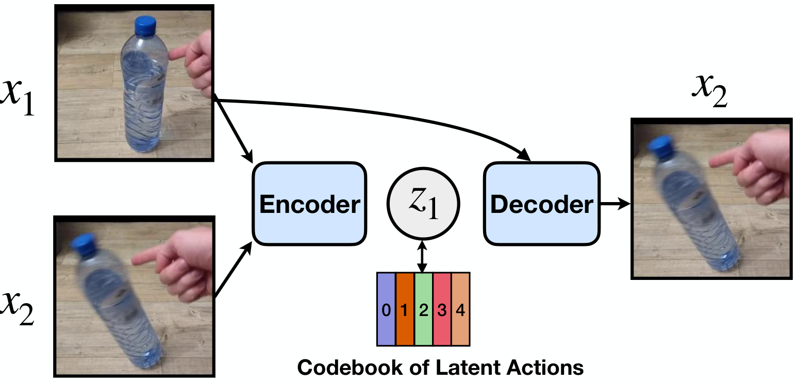
LAPA, arXiv 2410.11758, Fig. 2 (step 1)
23
Part 2: World action models
Learning from human video: point tracks
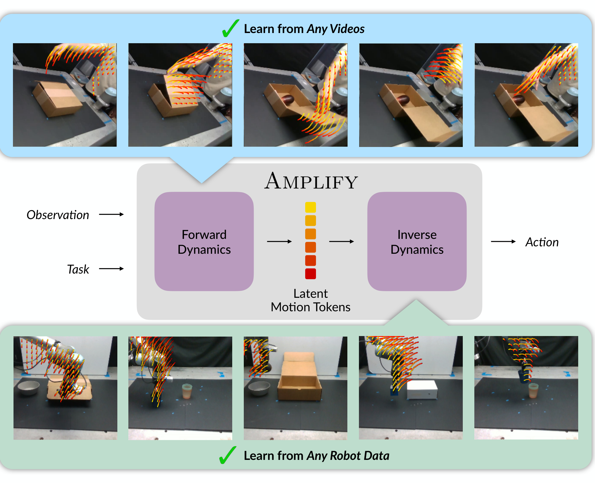
AMPLIFY, arXiv 2506.14198, Fig. 1 (right half)
24
Part 2: World action models
Video generation models: Wan
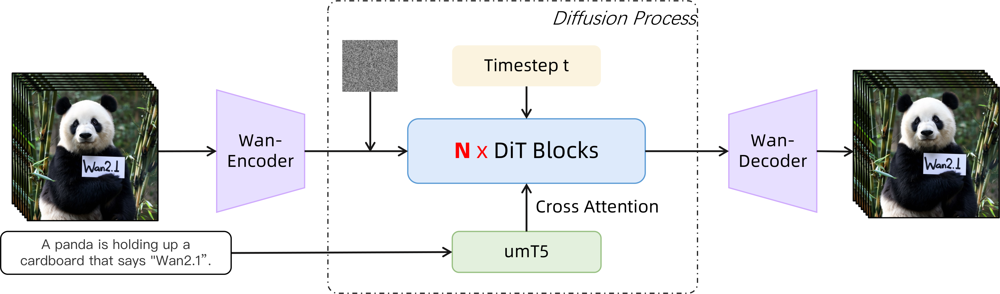
Wan, arXiv 2503.20314, Fig. 9
25
Part 2: World action models
VLAs, world models and WAMs
VLA
Which action should I take?
imagetext
↓
VLM backbone
↓
action
π0.5, GR00T, OpenVLA
World model
What happens if I take this action?
imageaction
↓
video model
↓
future video
Cosmos, Genie, UniSim
WAM
What happens next, and which action causes it?
imagetext
↓
pretrained video model
↓
future videoaction
DreamZero, Fast-WAM, FloMo
26
Part 2: World action models
How video models became policies
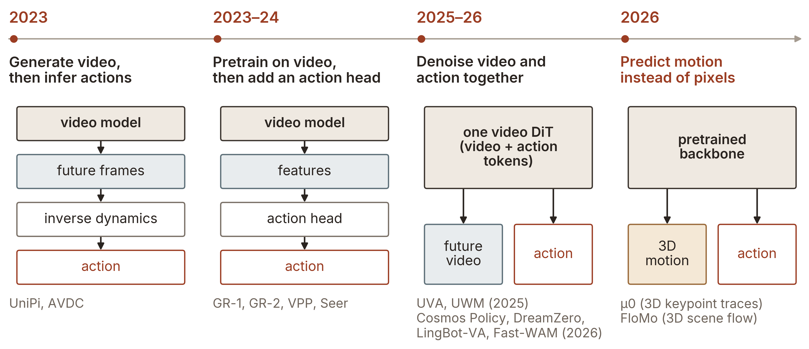
Years: first arXiv version of each paper (ids in speaker notes)
27
Part 2: World action models
Video contains information the controller does not need
What WAMs predict
The motion that matters for control
28
FloMo, ICRA 2027 submission
3D Scene Flow as a World Action Model Intermediate for Learning from Human Video
29
Part 2: FloMo
3D scene flow as the prediction target
RGB
3D point tracks
Scene flow as RGB
30
Part 2: FloMo
Rendering 3D scene flow as RGB
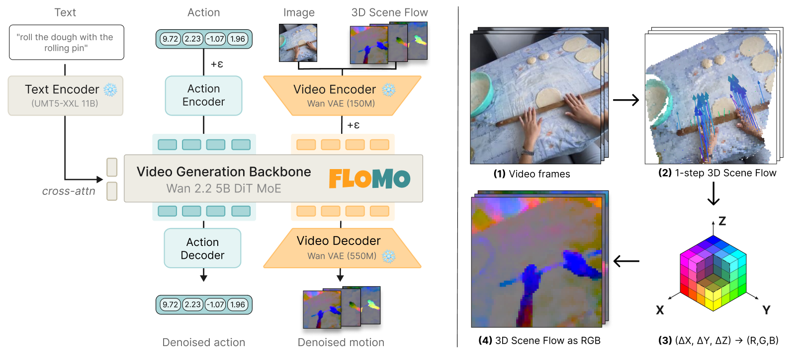
1
A 16-frame clip
2
Track a 64 × 64 grid of points in 3D
3
Map (ΔX, ΔY, ΔZ) to (R, G, B)
4
The result is a video the Wan VAE can encode
FloMo, Fig. 1
31
Part 2: FloMo
Architecture
1
Inputs: instruction, image, noisy scene flow, noisy actions
2
Frozen umT5-XXL and Wan 2.2 VAE encoders
3
Wan 2.2 5B DiT with LoRA (rank 64)
4
Scene flow and actions are denoised together
FloMo, Fig. 1
32
Part 2: FloMo
Co-training on human video and robot teleoperation
Human video: scene flow only
81 hegocentric human video (EgoVerse)
Robot teleoperation: scene flow and actions
14 hbimanual YAM teleoperation
33
Part 2: FloMo
In-distribution real-robot tasks
Oven
Open the oven and put the croissant on the plate
Toolbox
Open the toolbox and put the screwdriver inside
Corn
Put the corn in the bowl
34
Part 2: FloMo
Predicting motion instead of video
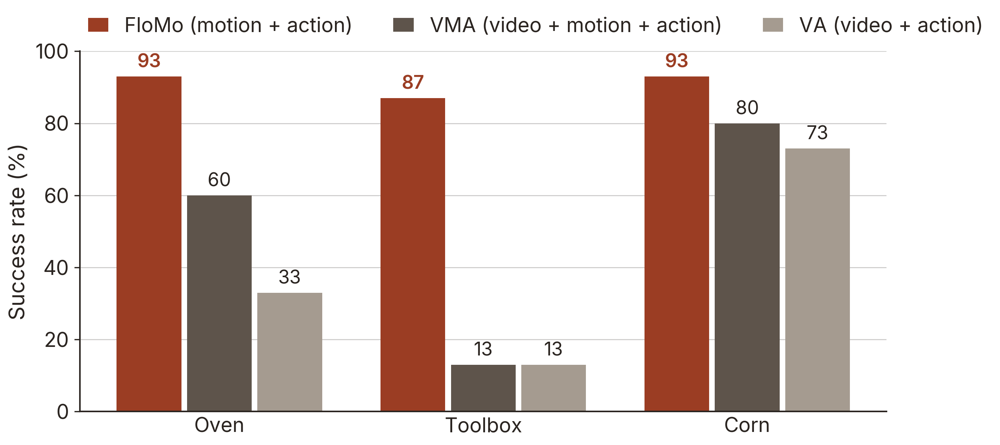
Average success rate (%), 15 rollouts per task
91
FloMo: motion + action
51
VMA: video + motion + action
40
VA: video + action
35
Part 2: FloMo
Out-of-distribution real-robot tasks
Close cabinet
Motion not in the robot data
Pull string
Task not in the robot data
Highlighter
Object not in the robot data
36
Part 2: FloMo
Out-of-distribution success
| Method | Close cabinet | Pull string | Highlighter | Total | Success % | Progress % |
|---|---|---|---|---|---|---|
| VMA | 0/10 | 0/10 | 2/10 | 2/30 | 7 | 15 |
| VA | 0/10 | 1/10 | 1/10 | 2/30 | 7 | 15 |
| DreamZero | 5/10 | 1/10 | 0/10 | 6/30 | 20 | 30 |
| AMPLIFY | 6/10 | 0/10 | 0/10 | 6/30 | 20 | 23 |
| FloMo, no human video | 0/5 | 1/5 | 0/5 | 1/15 | 7 | 30 |
| FloMo | 6/10 | 7/10 | 5/10 | 18/30 | 60 | 68 |
FloMo, Table I
37
Part 2: FloMo
The new motions come from human video
Out-of-distribution success rate
FloMo
60%
FloMo without human video
7%
Human video
Robot teleoperation
38
Part 2: FloMo
Simulation: RoboTwin 2.0
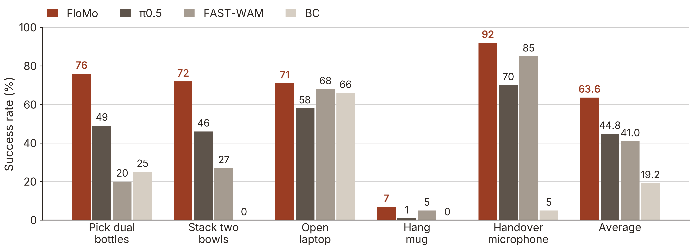
FloMo, Fig. 3a
39
Part 2: FloMo
Why motion helps
22%lower action error than video with 1% of the action data
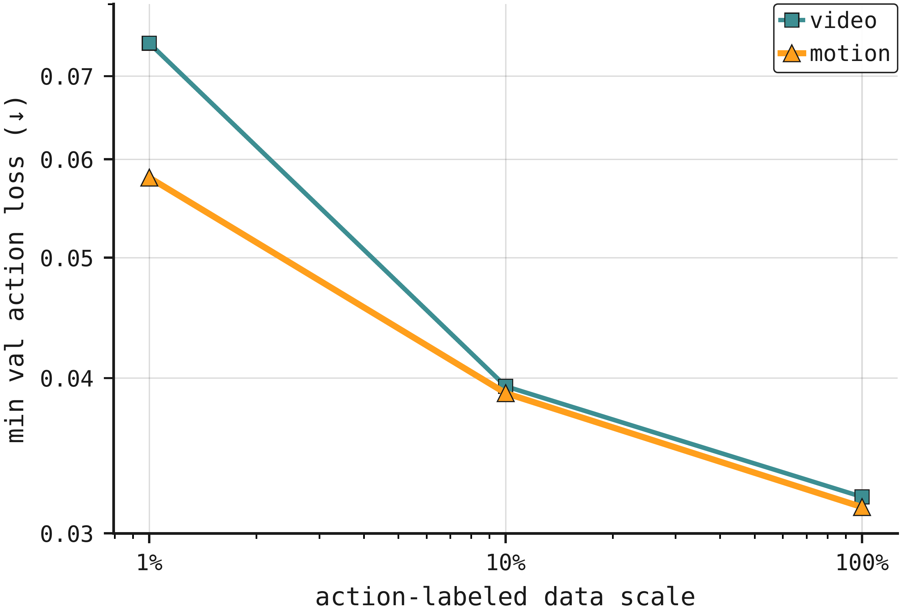
3×more attention from action tokens to motion than to video

FloMo, Sec. IV-D
40
Part 2: FloMo
FloMo: predict 3D motion, learn from human video
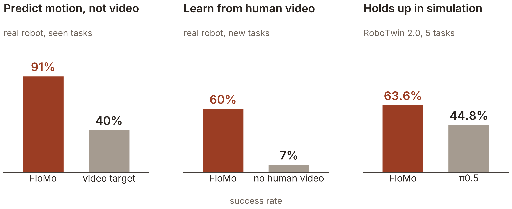
FloMo: Fig. 2 (seen tasks, average success), Table I (new tasks), Sec. IV-B.3 (RoboTwin 2.0 average; π0.5 is the best baseline)
41
Part 2: Next steps
Recall: FloMo writes scene flow as RGB
1
Metric displacement is clipped and squeezed into image range
2
The Wan VAE was trained on natural video, not motion fields
FloMo, Fig. 1
42
Part 2: Next steps
Aligned latents help generation
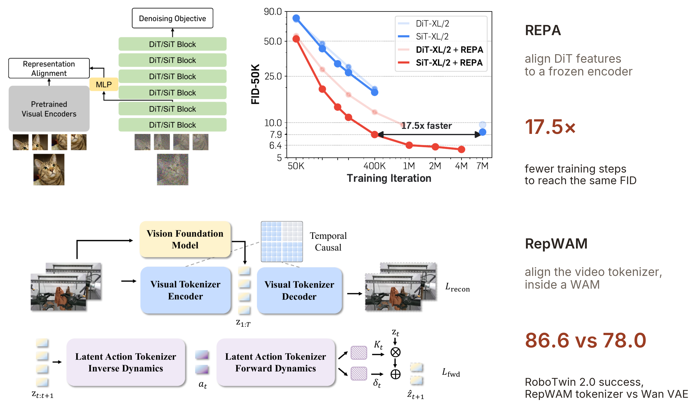
REPA, arXiv 2410.06940, Fig. 1; RepWAM, arXiv 2606.13674, Fig. 1 and Table 3
43
Part 2: Next steps
Step 1: a flow encoder aligned to semantics
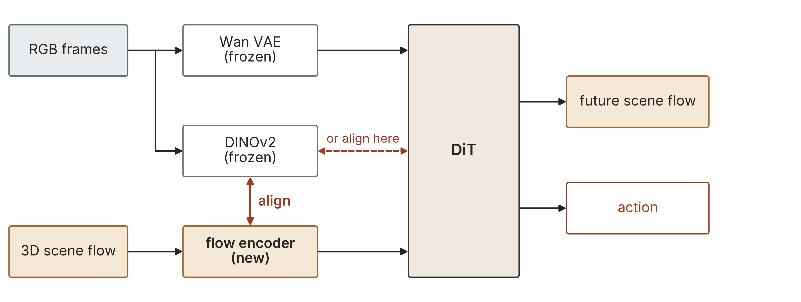
44
Part 2: Next steps
Step 2: denoise every stream together
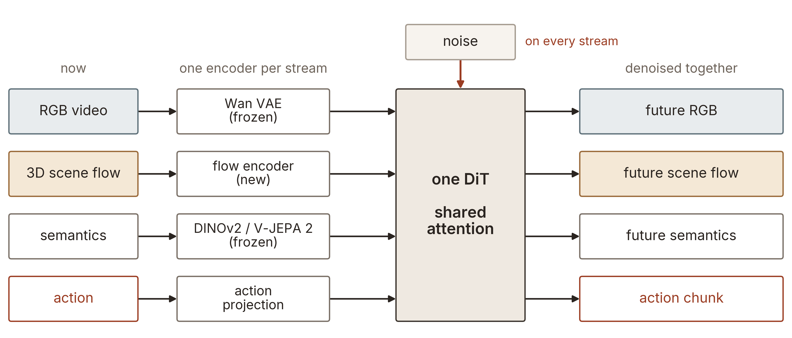
Proposal, not a result
45
Part 2: Next steps
One more modality: touch and force
46
Part 2: Next steps
Why touch and force
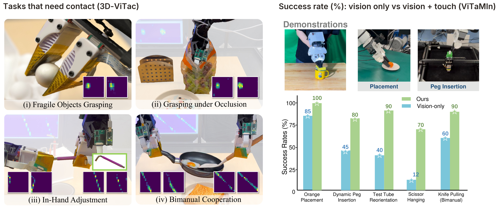
3D-ViTac, arXiv 2410.24091, Fig. 1; ViTaMIn, arXiv 2504.06156, Fig. 1
47
Part 2: Next steps
Adding touch to FloMo
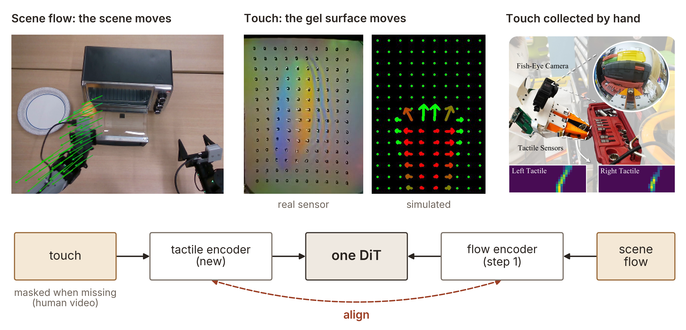
Proposal, not a result
TacSL, arXiv 2408.06506, Fig. 1; Touch in the Wild, arXiv 2507.15062, Fig. 1a; scene flow: FloMo
48
Thank you
Shitij Govil